Exchange Message Trail
EMT finds a message in Microsoft Exchange Server 2016 and 2019 (on-premises). It can possibly also operate with Exchange Server SE (not tested). It shows the delivery to each recipient. When it is necessary, EMT deletes the message from the mailboxes.
EMT answers these questions:
- Did a user send the message?
- Did the message arrive? In which folder?
- Why did the message not arrive? At which step did the delivery stop?
Message search
Finds the message in the message tracking log. Shows the status of each recipient. Examines the mailbox of a recipient.
Delete
Finds the copies of a message in the mailboxes. Deletes them. Verifies the result.
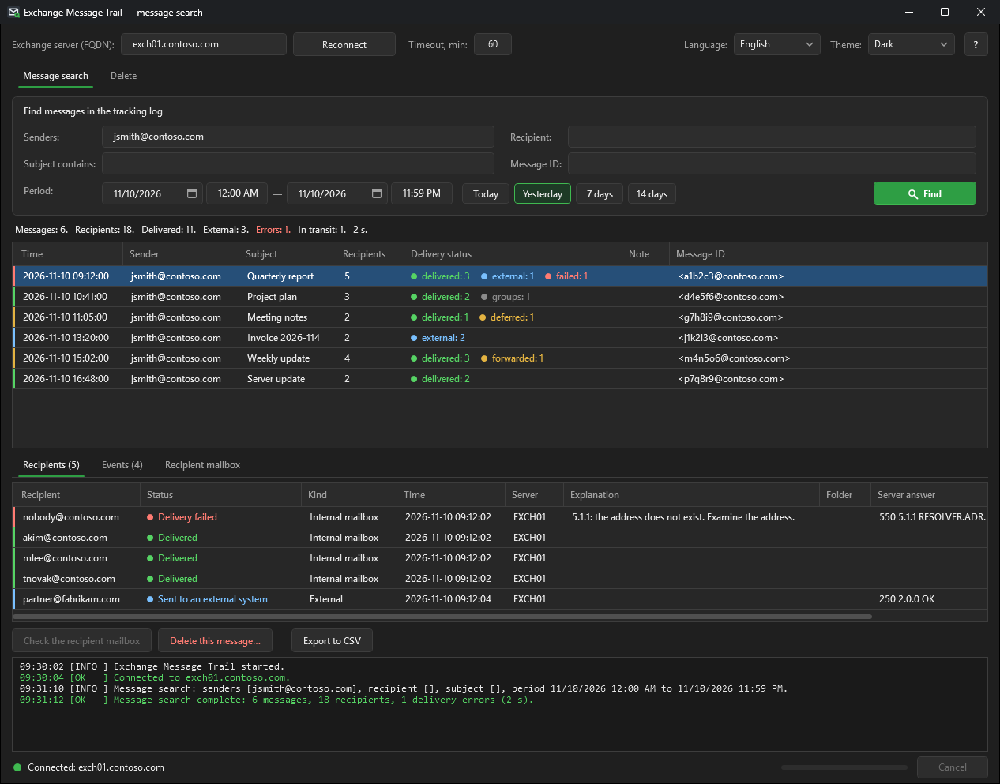
Install and start
Requirements
| Item | Requirement |
|---|---|
| Exchange | Exchange Server 2016 or 2019, on-premises. Exchange Server SE: possibly, not tested. |
| Computer | The Exchange server, or a Windows computer in the same domain |
| PowerShell | Windows PowerShell 5.1 |
| .NET | .NET Framework 4.5 or later |
| Network | HTTP access to http://<server>/PowerShell/ |
| Authentication | Kerberos (a domain account) |
You do not have to install the Exchange Management Tools. EMT connects through remote PowerShell.
Install
- Copy the EMT folder to the computer.
- Keep the folder structure. EMT needs the folders
src,Lang,guiandhelp. - If you downloaded a ZIP file, unblock the files:
Get-ChildItem -Recurse | Unblock-File
Start
- Double-click
EMT.cmd.
The window opens in front of the other windows. The PowerShell console stays hidden.
Shortcut
The shortcut Exchange Message Trail with the EMT icon is in the EMT folder. EMT makes it at the first start.
If you move the folder, EMT makes the shortcut again at the next start. Copy the shortcut to the desktop or to the Start menu if necessary.
The shortcut opens EMT.cmd. If the shortcut is removed (by you or by an antivirus), EMT does not make it again in the same folder.
To make it again, run this command in the EMT folder:
powershell.exe -ExecutionPolicy Bypass -File .\src\New-EmtShortcut.ps1To start EMT from PowerShell, type this command:
powershell.exe -STA -ExecutionPolicy Bypass -File .\ExchangeMessageTrail.ps1 -Server exch01.contoso.com| Parameter | Function |
|---|---|
-Server | The FQDN of the Exchange server. EMT keeps the last server name. |
-Language | The language code, for example en or ru. |
-Theme | Dark or Light. The default theme is Dark. |
EMT-Classic.cmd starts the earlier window (Windows Forms). It has the same functions.
Use it only if the usual window does not operate. A later version removes it.
The window
| # | Part | Function |
|---|---|---|
| 1 | Top line | The server, Connect, the timeout of the operations, the language and the theme |
| 2 | ? | Opens this guide. The key F1 also opens it. |
| 3 | Tabs | Message search and Delete |
| 4 | Criteria | Senders, recipient, subject, message ID and period |
| 5 | Find | Starts the search. The key Enter also starts it. |
| 6 | Summary line | The numbers of the result. Only the number of errors is red. |
| 7 | Messages | One row for each message |
| 8 | Details | The recipients, the events and the mailbox check of the selected message |
| 9 | Actions | Check the recipient mailbox, Delete this message…, Export to CSV |
| 10 | Log | The messages of the session. Green = OK, orange = warning, red = error. |
| 11 | Bottom line | The connection on the left. The running operation, the progress and Cancel on the right. |
Tables
- Drag the border of a column header to change the width.
- Click a column header to sort the rows.
- Drag a column header to move the column.
- Push Ctrl+C to copy the selected rows with the headers.
- The tab name shows the row count, for example Recipients (5).
To stop an operation, click Cancel. EMT stops after the current step.
Connection and roles
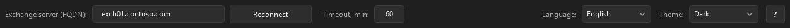
- In the field Exchange server (FQDN), type the full server name.
- Click Connect.
- Make sure that the bottom line shows a green indicator and "Connected".
- Make sure that the log shows no warning about a missing role.
EMT examines the roles of your account. A function without its role is not available: its button is disabled. The log shows one warning for each function that is not available.
| Function | Cmdlets | Role group |
|---|---|---|
| Message search | Get-MessageTrackingLog, Get-TransportService, Get-Recipient | Organization Management, Records Management or Compliance Management |
| Mailbox check | Get-InboxRule, Get-MailboxJunkEmailConfiguration, Get-Mailbox, Get-MailboxStatistics | Organization Management or Recipient Management |
| Find copies, verification | New-ComplianceSearch, Search-Mailbox | Discovery Management |
| Soft delete | New-ComplianceSearchAction | Discovery Management |
| Hard delete | Search-Mailbox -DeleteContent | The role Mailbox Import Export (assign it manually) |
To assign the role Mailbox Import Export, type this command in the Exchange Management Shell:
New-ManagementRoleAssignment -Role "Mailbox Import Export" -User "<account>"Close EMT and start it again after a role change.
Message search
The message search reads only the message tracking log. It does not open the mailboxes. It does not change data.
- Open the tab Message search.
- Type one or more criteria.
- Set the period.
- Click Find.
- Select a message in the list.
- Examine the tab Recipients.
Criteria
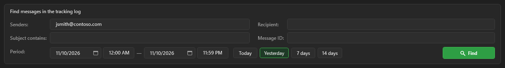
| Field | Use |
|---|---|
| Senders | One or more addresses, parts of addresses or names. The separator is a comma or a semicolon. |
| Recipient | One address, a part of an address or a name. A recipient alone is permitted. |
| Subject contains | A part of the subject |
| Message ID | The internet message ID, for example <a1b2c3@contoso.com> |
| Period | The start and the end: a date and a time |
Set one criterion or more. A period alone is not permitted. The maximum period is 31 days.
Period and time
- Each date has a time field. The time uses the format of Windows, for example
14:30or2:30 PM. - The end includes its minute:
23:59is up to 23:59:59. - Today, Yesterday, 7 days and 14 days set the period from 0:00 to 23:59.
- The button of the current period is green. A manual change of the period removes the green mark.
- A small screen: after a search, one line with the criteria replaces the criteria. This gives more space to the result. Click Show criteria to change the criteria. The tab Delete operates in the same way.
- A wrong time goes back to the last correct time. The log shows a warning.
- The date format and the first day of the week come from the regional settings of Windows.
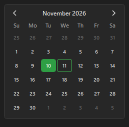
Partial addresses
You can type a part of an address or a name, for example kim.
EMT finds the full address in the Exchange address book (Get-Recipient -Anr).
| Matches | Result |
|---|---|
| One | EMT puts the full address in the field. The log shows the change. |
| More than one | A window shows the list. Select the address. For senders, you can select more than one. |
| None | An error window shows the text. The search does not start. |
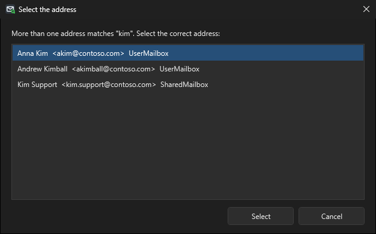
Search by a recipient
A search with a recipient is fast also for many messages.
- The list shows the delivery to this recipient only.
- The column Note shows "Other recipients: select the message".
- The summary line starts with "Recipient x:". The numbers are for this recipient.
- When you select a message, EMT loads all its recipients and events. This takes about one second.
- When you export the result, EMT asks if it must load all messages first.
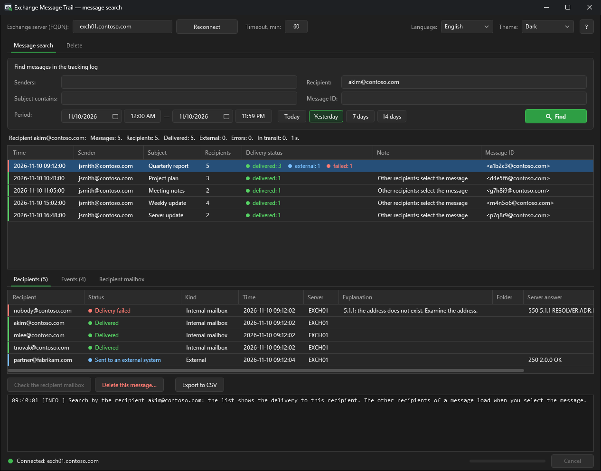
Delivery statuses and colors
The rows have no fill color. Two marks show the result:
- The column Delivery status shows each status with its color, for example delivered: 3 external: 1 failed: 1.
- The left edge of a row shows the worst status of the message.
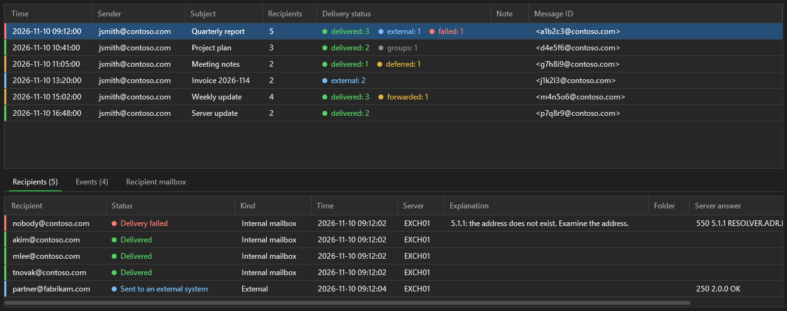
| Status | Color | Meaning |
|---|---|---|
| Delivered | Green | Exchange put the message in the mailbox (DELIVER, DUPLICATEDELIVER). |
| Sent to an external system | Blue | Exchange sent the message to an external server (SEND, SENDEXTERNAL). |
| Forwarded by the mailbox | Yellow | The mailbox has forwarding. The message went to the forwarding address, not into the mailbox. |
| Deferred | Yellow | The delivery is delayed. Exchange tries again (DEFER). |
| Delivery failed | Red | Exchange did not deliver the message (FAIL). |
| Rejected by the group | Red | The group has a restriction on the senders. |
| Dropped | Red | Exchange dropped the message with an error code. |
| In transit | Grey | The message is between Exchange servers. |
| Group: sent to the members | Grey | The address is a group. The members get the message. |
| Not sent by an Exchange setting | Grey | An automatic reply, an automatic forward or a report that Exchange does not send. This is not an error. |
| No delivery data | Grey | The tracking log has only the receive event. |
| Left edge | Message | Recipient |
|---|---|---|
| Red | One or more recipients did not get the message | Delivery failed, rejected by the group, dropped |
| Yellow | A delivery is delayed, or a mailbox forwards the message | Deferred, forwarded by the mailbox |
| Grey | One or more deliveries are not complete | In transit, group, not sent by a setting, no data |
| Blue | All recipients have the message, some are external | Sent to an external system |
| Green | All recipients have the message | Delivered |
Exchange writes DROP also for usual steps, for example the expansion of a group. EMT reads the server answer and shows the correct status.
Recipient columns
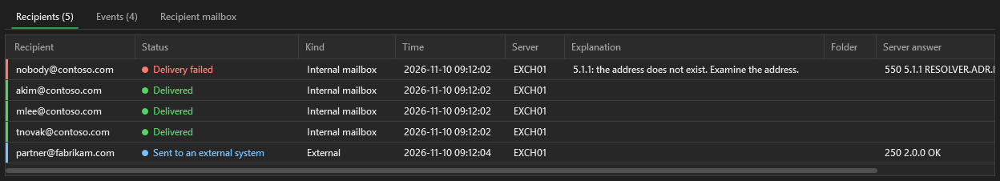
| Column | Content |
|---|---|
| Explanation | The cause of a problem, from the code of the server answer. Empty for a usual delivery. |
| Folder | The folder of the delivery when it is not Inbox. Usually an inbox rule moved the message. |
| Server answer | The text of the server, for example 550 5.1.1 RESOLVER.ADR.RecipNotFound. |
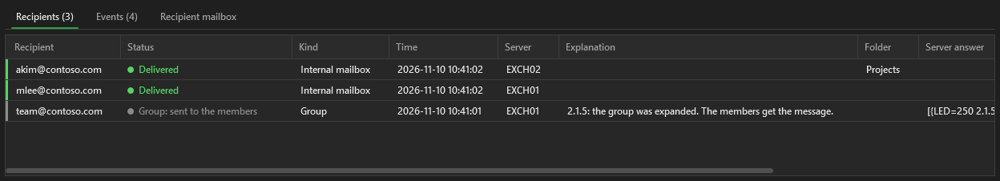
| Code | Explanation |
|---|---|
5.1.1, 5.1.10 | The address does not exist. |
5.2.2 | The recipient mailbox is full. |
5.2.3, 5.3.4 | The message is too large. |
4.4.7, 5.4.7 | The delivery time expired. |
4.4.x | No connection to the recipient server. Exchange tries again. |
5.7.x | Rejected: no permission, a restriction, a policy or a filter. |
Events
Double-click a message to open the tab Events. The tab shows all tracking events of the message in time order.
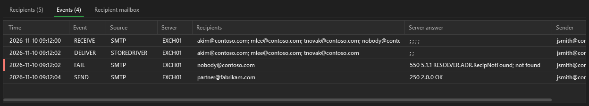
Nothing found
When the search finds no message, the log shows what to examine:
- the period: the message can be earlier or later;
- the addresses: the message can come from another address or go to a group;
- the subject;
- the folders Outbox and Sent Items of the sender: the user can have not sent the message.
The tracking log keeps data for 30 days by default.
Mailbox check
The tracking log shows the message only up to the mailbox. The mailbox check shows the causes in the mailbox. It is read-only.
- Select the message.
- On the tab Recipients, select an internal recipient.
- Click Check the recipient mailbox.
- Examine the tab Recipient mailbox.
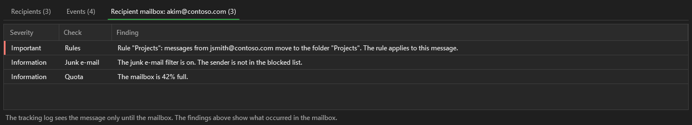
| Area | What EMT examines |
|---|---|
| Rules | The inbox rules: move, delete, forward. EMT tells if a rule applies to this message. |
| Junk e-mail | The junk e-mail filter, the blocked and the trusted senders |
| Forwarding | The forwarding of the mailbox |
| Quota | The size of the mailbox and its limits |
The button is disabled for an external address.
Delete
A hard delete is permanent. The user cannot recover the message. Examine the result before each delete.
From the message search (recommended)
- On the tab Message search, select the message.
- Click Delete this message….
- Make sure that the green line says "Data from the tracking log".
- Click Find copies.
- Examine the result tabs.
- Click Delete (soft) or Delete (hard).
- Read the confirmation window.
- Confirm the delete.
- Examine the tab Verification.
EMT sets the period from 5 minutes before the message to 23:59 of its day. Then the search of copies uses one day.
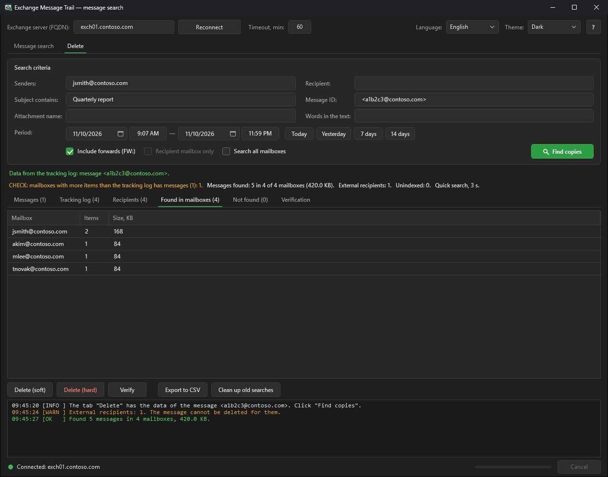
With your own criteria
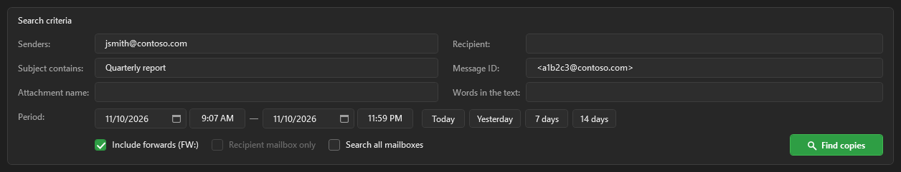
| Criterion or option | Function |
|---|---|
| Attachment name | A file name in the message |
| Words in the text | A phrase in the text of the message |
| Include forwards (FW:) | Adds the messages with the same subject from other senders |
| Recipient mailbox only | Searches and deletes only in the mailbox of the field Recipient |
| Search all mailboxes | Searches in all mailboxes of the organization. This is slow. |
A line over the result shows the source of the criteria: green = from the tracking log, orange = typed by the user. A change of a criterion clears the result.
| Mailboxes | Method | Time |
|---|---|---|
| 1 to 10 | Quick search (Search-Mailbox) | Seconds |
| More than 10, or all | Compliance Search | 1 to 3 minutes and more |
Warnings
| Warning | Meaning | Action |
|---|---|---|
| CHECK: mailboxes with more items than the tracking log has messages | The query cannot use the message ID. It also finds other messages with the same sender and subject on these days, and copies in Recoverable Items. | Examine the tab Found in mailboxes. Each delete needs the typed word. |
| NOT CONFIRMED BY THE TRACKING LOG | The search found items, but the tracking log has no message. | Examine the criteria. Each delete needs the typed word. |
| External recipients | EMT cannot delete a message from an external mailbox. | Tell your security team about each external recipient. |
Soft and hard delete
| Soft delete | Hard delete | |
|---|---|---|
| Button | Delete (soft) | Delete (hard) |
| Cmdlet | New-ComplianceSearchAction -Purge -PurgeType SoftDelete | Search-Mailbox -SearchDumpster -DeleteContent |
| Result | The message goes to Recoverable Items. The user can recover it in Outlook. | The message is removed also from Recoverable Items. |
| Confirmation | A window. The typed word only with a warning. | A window and the typed word DELETE |
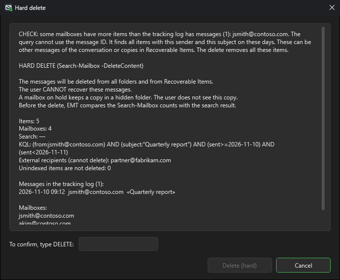
A mailbox on Litigation Hold or In-Place Hold keeps a copy after a hard delete in a hidden folder. The user does not see it.
Verification
After each delete, EMT examines each mailbox again. The tab Verification shows the result.
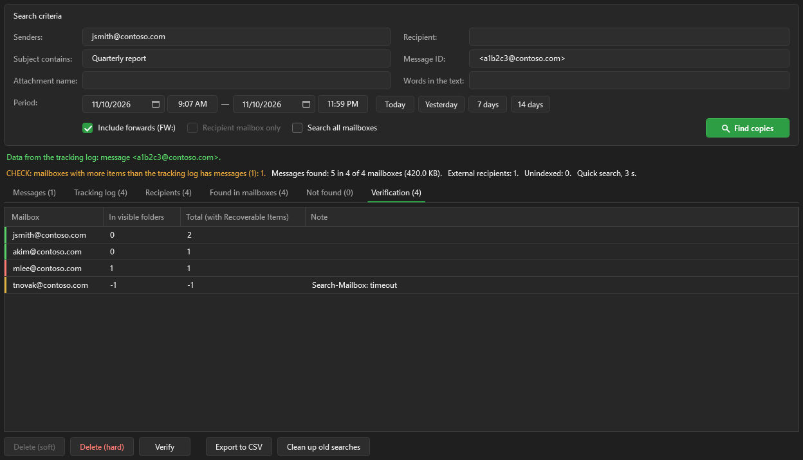
| Left edge | Meaning |
|---|---|
| Green | No copy in the visible folders |
| Red | The message is still in the visible folders |
| Yellow | The verification failed. See the column Note. |
After a soft delete, the column Total (with Recoverable Items) is more than 0. This is correct.
Cleanup of old searches
- Click Clean up old searches.
- Type the age of the searches in days.
- Examine the list of the searches.
- Confirm the cleanup.
EMT removes only its own searches: EMT_* and the older MC_*. It does not remove a search that still runs.
Examples
A message did not arrive: the address does not exist
- In Senders, type the address of the sender.
- Click Today.
- Click Find.
- Find the message with a red left edge.
- Select the message.
- Read the columns Explanation and Server answer.
Result: 5.1.1, the address does not exist. Tell the sender the correct address.
The message arrived, but the user does not see it
- Find the message.
- Select the message.
- Examine the column Folder of the recipient.
- Select the recipient.
- Click Check the recipient mailbox.
Result: an inbox rule moves the message to the folder "Projects". Tell the user the folder.
The mailbox forwards the messages to another address
The status is Forwarded by the mailbox. The left edge is yellow.
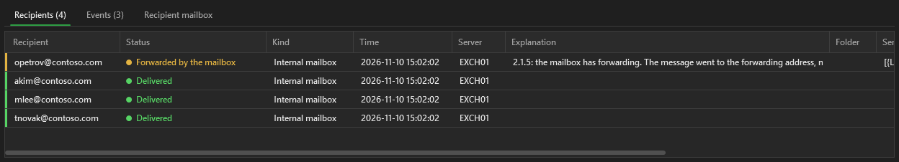
The message did not go into the mailbox. Use the mailbox check to see the forwarding address.
A hidden copy for the security team (transport rule)
A transport rule adds a hidden copy. Exchange sends it through a Send connector (SENDEXTERNAL).
EMT shows Sent to an external system.
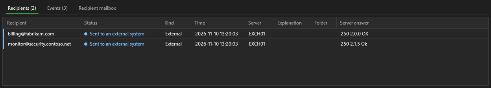
The delivery to an external server is delayed
The status is Deferred. Exchange tries again.
The server answer tells the cause, for example 451 4.4.0.
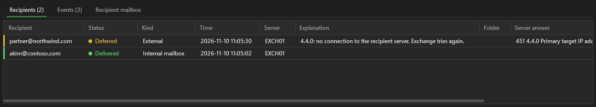
All messages to one recipient for a week
- Clear Senders and Subject contains.
- In Recipient, type the address.
- Click 7 days.
- Click Find.
- Select a message to see all its recipients.
Delete a phishing message from all recipients
- Find the message on the tab Message search.
- Select the message.
- Click Delete this message….
- Click Find copies.
- Examine the tab Found in mailboxes.
- Examine the tab Recipients for external recipients.
- Click Delete (soft).
- Confirm the delete.
- Examine the tab Verification.
If the users must not recover the message, do a hard delete after the soft delete.
Files and audit
| File | Content |
|---|---|
%USERPROFILE%\ExchangeMessageTrail\audit.csv | One row for each message search, mailbox check, search of copies, delete, verification and cleanup |
%USERPROFILE%\ExchangeMessageTrail\logs\EMT_<date>.log | The full log of one session |
%APPDATA%\ExchangeMessageTrail\settings.json | The last server, the language, the theme, the options, the timeout and the window size. Senders and subjects are not kept. |
Click Export to CSV to save the data of a tab as CSV files.
The log, the audit file and the export files contain mailbox addresses. Keep them in a safe location.
Language and theme
- Select the language in the list Language. The change occurs immediately.
- Select Dark or Light in the list Theme. The change occurs immediately.
- EMT keeps the selection in
settings.json.
The languages are files in the folder Lang. To add a language, put a new .lng file in this folder.
Troubleshooting
| Problem | Cause | Action |
|---|---|---|
| A window says "Exchange Message Trail could not start" | An error at the start | Read the cause in the window. Make sure that the folders gui, src and Lang are present. |
| Kerberos error on connect | The computer is not in the domain, or the name is not an FQDN | Use the FQDN. Use a domain computer. |
| A button is disabled | Your account does not have the role | See Connection and roles. |
| The message search finds nothing | The period, the address, or the log data is too old | Read the hints in the log. Make the period larger. |
| Delivered, but the user does not see the message | A rule, the junk e-mail filter or forwarding | Use the mailbox check. |
| Found 0 copies, but the message exists | The message is unindexed, or the subject is different | Use Search all mailboxes. Make the subject text shorter. |
| The window does not operate correctly | A problem of the window | Start EMT-Classic.cmd. Tell the developer about the problem. |
Exchange 2019 behavior
These facts come from tests on Exchange Server 2019. EMT obeys them.
| Behavior | Rule |
|---|---|
A *-ComplianceSearch* cmdlet with -ErrorAction Stop fails | Do not use -ErrorAction Stop with these cmdlets. |
Remove-ComplianceSearch removes the search in the background | Examine the search again for up to 60 seconds. |
| A running search cannot be removed | Wait for the status Completed. |
Many DROP events have the success code 250 2.1.5 | Read the cause in the server answer. |
Contact and support
Questions and ideas
Questions, ideas and help: Telegram @mnemo_nic.
Errors: GitHub Issues. Do not attach logs with real mailbox addresses.
Support the project
EMT is free, and I develop it in my free time. Did EMT find a lost message for you? Did it save you an hour during an incident? Then you can say “thank you” with a small donation. ☕
Each donation shows me that EMT is useful, and it gives me time for the next version.
Send TON or USDT in the TON network to this address:
UQDN9J6d6CebRAJZT9N5MnXw7K9rbH_wfM2pb0hSbF7re9-L
Make sure that the network is TON. A transfer in a different network is lost.